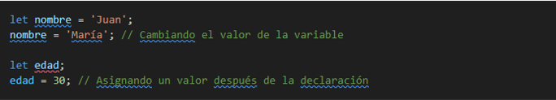

- PRIMERO DEFINIREMOS CONST, LET Y VAR
Let, const y var son palabras clave que se utilizan para declarar variables en JavaScript, pero tienen diferencias importantes en cuanto a su alcance y mutabilidad. Aquí tienes una explicación de cada uno:
- CONST
const es una palabra clave en JavaScript que se utiliza para declarar variables cuyos valores no cambiarán a lo largo del programa. Es como decirle a JavaScript: "¡Hey, este valor es constante, no lo cambies por nada en el mundo!". Cuando declaras una variable con const, estás indicando que su valor permanecerá igual después de haber sido asignado.
Imagina que tienes una caja y decides poner algo dentro. Con const, una vez que colocas algo dentro de la caja, ese algo no puede ser cambiado por otra cosa. Por ejemplo, si pones una manzana dentro de la caja, no puedes sacar la manzana y poner una pera en su lugar. La manzana permanece allí para siempre.
Por ejemplo:
En este ejemplo, edad es una constante que tiene el valor de 30. No importa cuánto pase el tiempo o cuánto intentes cambiarlo, edad siempre será 30.
Sin embargo, es importante destacar que const no impide que el valor almacenado sea mutable. Por ejemplo, si edad es un objeto o un arreglo, puedes cambiar sus propiedades o elementos, pero no puedes asignarle una nueva referencia.
POR EJEMPLO:

Por lo que podemos decir entonces que const se utiliza para declarar variables cuyos valores no cambiarán a lo largo del programa. Es una buena práctica utilizar const siempre que sea posible, ya que ayuda a prevenir errores y a hacer tu código más claro y legible
- LET
let es otra palabra clave en JavaScript que se utiliza para declarar variables, pero con una diferencia importante con respecto a const. Mientras que const se utiliza para valores que no cambiarán a lo largo del programa, let se utiliza para variables cuyos valores pueden cambiar.
Imagina que tienes una caja y decides poner algo dentro. Con let, puedes cambiar lo que está dentro de la caja en cualquier momento. Por ejemplo, si inicialmente pones una manzana dentro de la caja, más tarde puedes sacar la manzana y poner una pera en su lugar. El contenido de la caja puede cambiar según lo necesites.
Por ejemplo:
En este ejemplo, contador es una variable que puede cambiar su valor a medida que el programa se ejecuta. Inicialmente se establece en 0, pero más tarde puedes incrementarlo, decrementarlo o asignarle cualquier otro valor según lo requiera tu programa.
Un ejemplo de cambio de valor:

- VAR
var es una palabra clave que se utiliza para declarar variables en JavaScript, al igual que let y const. Sin embargo, var tiene algunas diferencias importantes en comparación con let y const.
Imagina var como una caja donde puedes guardar cosas. Puedes poner cosas diferentes dentro de la caja en diferentes momentos, y puedes cambiar lo que está dentro de la caja en cualquier momento. Por ejemplo, puedes poner una manzana en la caja y más tarde cambiarla por una pera. La flexibilidad de var permite que el valor de la variable cambie a lo largo del programa.
Por ejemplo:
En este ejemplo, contador es una variable declarada con var, lo que significa que su valor puede cambiar a medida que el programa se ejecuta. Puedes incrementar contador, decrementarlo o asignarle cualquier otro valor según lo requiera tu programa.
otro ejemplo seria:
Una diferencia importante entre var y let es que var tiene un alcance de función, lo que significa que la variable declarada con var existe en toda la función en la que se declara. Esto puede llevar a problemas de alcance (scope) si no se maneja correctamente.
Por ejemplo:
- DIFERENCIAS RELEVANTES
Aun cuando en cada definicion se hablo de las diferencias de una con otras, enumeraremos en forma resumida las diferencias:
Alcance (Scope):const y let tienen alcance de bloque (block scope), lo que significa que solo están disponibles dentro del bloque donde se declaran.
var tiene alcance de función (function scope), lo que significa que está disponible dentro de la función donde se declara o en el ámbito global si no está dentro de una función.
Reasignación de valor:Con const, no puedes reasignar el valor de la variable después de inicializarla. Sin embargo, para objetos y matrices, el contenido puede ser modificado.
Con let, puedes reasignar el valor de la variable en el mismo ámbito.
Con var, puedes reasignar el valor de la variable en cualquier lugar de la función o el ámbito global.
Izado (Hoisting):Tanto var como let son izadas (hoisted) al principio de su ámbito, pero var es inicializada con undefined, mientras que let no está inicializada hasta que alcanza la línea donde se declara.
const también es izada, pero no puedes acceder a ella antes de su declaración.
Temporalidad de TDZ (Temporal Dead Zone): Con const y let, hay una zona temporal muerta (Temporal Dead Zone) desde el inicio del bloque hasta la declaración de la variable. No puedes acceder a la variable en este período.
Con var, no hay TDZ, por lo que puedes acceder a la variable antes de su declaración, pero su valor será undefined.
Redeclaración: No puedes redeclarar una variable con el mismo nombre en el mismo ámbito con let y const, lo que puede ayudar a evitar errores.
Con var, puedes redeclarar una variable sin recibir un error, lo que puede causar confusión y errores en el código.
Compatibilidad con ECMAScript 6: let y const fueron introducidos en ECMAScript 6 (ES6), por lo que pueden no ser compatibles con versiones anteriores de JavaScript en algunos navegadores.
var es compatible con versiones anteriores y está ampliamente soportado en todos los navegadores.
- Para mas informacion consullta:
Mozilla Developer Network (MDN) - let: https://developer.mozilla.org/es/docs/Web/JavaScript/Reference/Statements/let
W3Schools - var: https://www.w3schools.com/js/js_let.asp
JavaScript.info - const: https://javascript.info/let